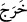

Bu cümle, yukarıdaki “  ” ile başlayan cümleye atfedilmiştir. Aradaki mu’teriza
” ile başlayan cümleye atfedilmiştir. Aradaki mu’teriza
cümlesidir. “ deki harf-i cer, “ye yahutta mahzuf bir fiile müteallik olup
failinden haldir. Yani, “ (ihtişam ve zinetli olduğu halde) demektir.
“Ziynet” ile kasdedilen; dünyaya âid mal, eşyâ, mevki, makam vb. şeylerdir. Bir
kimse süslenip ziynetlendiğinde “ (şöyle süslendi, ziynetlendi, güzellik izhar
etti)” denir. Bu ya fiil ile ya da söz ile olur.
“Dünya hayatını arzulayanlar:”
Denilmiştir ki: Kârûn, cumartesi günü boz renkli katırının üzerinde kavminin yanına
çıktı. Ömrünün son günüydü. Kendi üzerinde ergüvânî kadife elbiseler, katırının
üzerinde ise altından bir eğer vardı. Ayrıca yanında dört bin süs eşyası bulunmaktaydı.
Bazıları demiştir ki: Yanında doksan bin za’feranlı elbise vardı. Bunları ilk defa o
gün giymişti. “, safran denilen kırmızı boya ile boyanmış elbise demektir.
Erkeklerin bu elbiseleri giyinmeleri dinen yasaklanmıştır. Çünkü bu bir ziynet elbisesi
ve kibir alametidir. Ayrıca bu elbiselerin erkeklere uygun olmayan bir kokusu da vardır.
Âriflere göre asıl ziynet; rubûbiyyet kapısında secde ederek, şevk ve muhabbet
gözyaşlarının tesiri ile parlayan yüzlerdir.
İbn Ata der ki: Kulların ziynetlendiği en iyi ziynet, marifetullâhtır. Dereceleri
âriflerin mertebelerinden aşağı olan mü’minlerin de ziynetlendikleri en iyi ziynet,
Rabbine tâat ve kulluktur. Dünya ile ziynetlenenler ise, bu ziynet ve süslerinde
aldanmışlardır.
Hâfız der ki:
Hakikat yolunun kalenderleri, yarım kuruşa bile almazlar
Hünersiz kişinin giydiği atlas kaftanı
Mesnevî’de der ki:
Renk, koku ve mekân övüncü
Ancak çocukları sevindirip aldatır
Attar der ki:
Çocuklar gibi kırmızıya, sarıya bakma
Kadınlar gibi renge ve kokuya aldanma
Sâ’dî der ki:
Kimin elbisesi temiz, huyu çirkinse